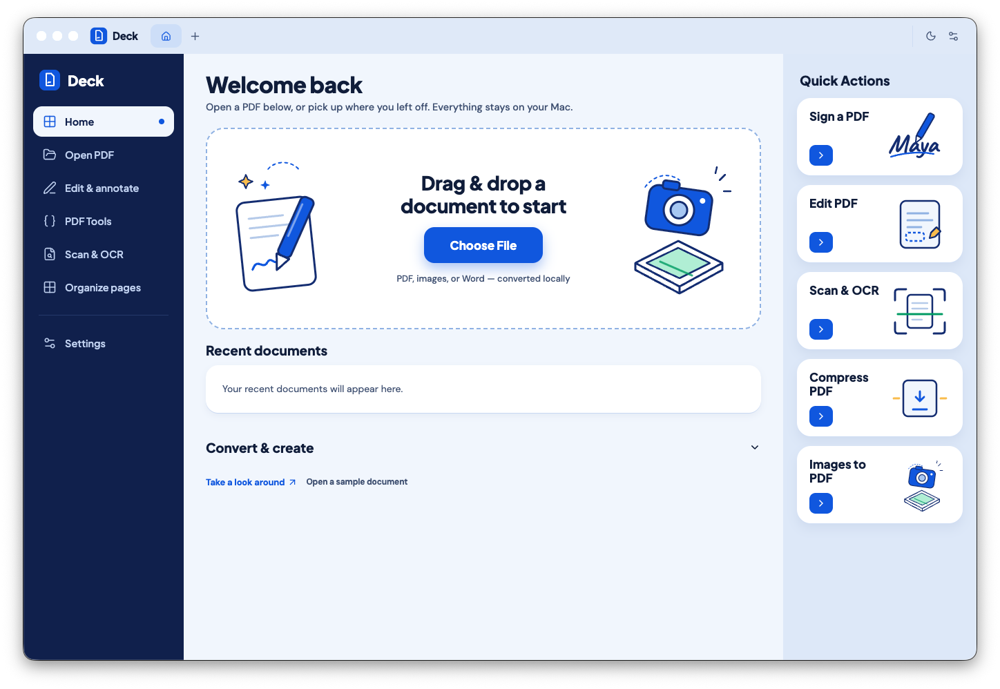

Edit & annotate
Highlight, underline, strike-through, ink, shapes, arrows, text boxes, and sticky notes — with full undo/redo and named history.
Deck is a local PDF workspace for macOS — redact, OCR, annotate & sign, and convert. No accounts, no uploads, no telemetry. Your files never leave your machine.

Every edit happens on-device. There is no cloud, no sync service, and no remote processing.
No sign-up, no login, no subscription. Open the app and start working on your documents.
OCR, conversion, and rendering engines are bundled locally. Opening a PDF never needs a connection.
A full local toolkit — from precise annotations to real redaction and offline OCR.
Highlight, underline, strike-through, ink, shapes, arrows, text boxes, and sticky notes — with full undo/redo and named history.
Permanently remove underlying text and images, baking a black box into the page. Destructive removal — not a drawing overlay.
Apple Vision OCR recognizes up to 100 pages at 300 DPI, preserves tables as Markdown, and flags low-confidence numbers.
Draw, type in script styles, or import a signature with automatic background removal — resized with proportional aspect preservation.
PDF↔DOCX in Exact Layout or Editable Text modes, PDF↔PPTX, and high-quality PNG/JPEG↔PDF conversion.
Tabbed documents, thumbnails, dark mode, Finder open-file events, drag & drop, and your choice of four workspace palettes.
Twenty-plus local utilities — no website, no queue, no file-size ransom.
Deck is built on the principle that a PDF editor has no reason to see your PDFs. The packaged app blocks web requests, has no analytics, and stores nothing in the cloud.
Yes. Deck is released under AGPL-3.0 with no license fees, accounts, or subscriptions. It bundles open-source engines like MuPDF and PDF.js under their own licenses.
Deck is a focused, local alternative — not full Acrobat parity. Editing existing page text, scanner capture, form creation, and cryptographic signatures are not implemented. Existing form fields can be filled.
Nowhere but where you put them. Deck opens and saves your files on your own disk. Recent-file paths are stored locally in the app's data folder; PDF contents are never stored there.
Inputs up to 50 MB and 500 pages, per-tab history of up to 40 revisions, printing up to 100 pages, and split/exports capped at 100 MB per operation.